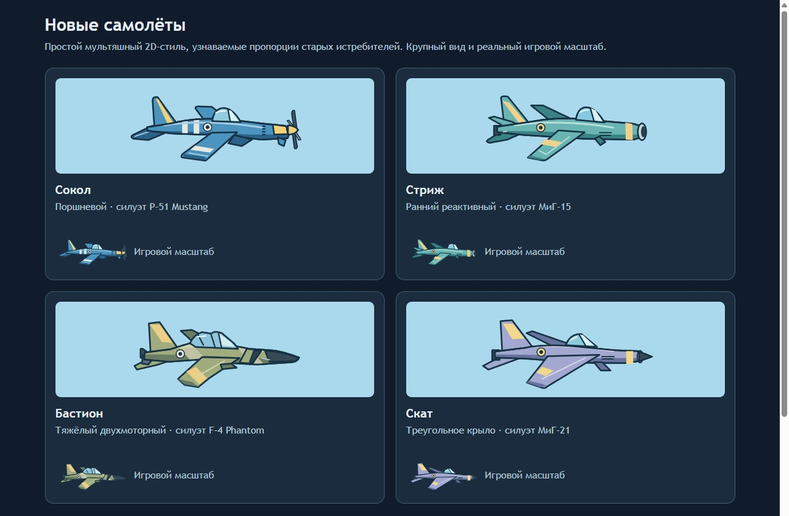
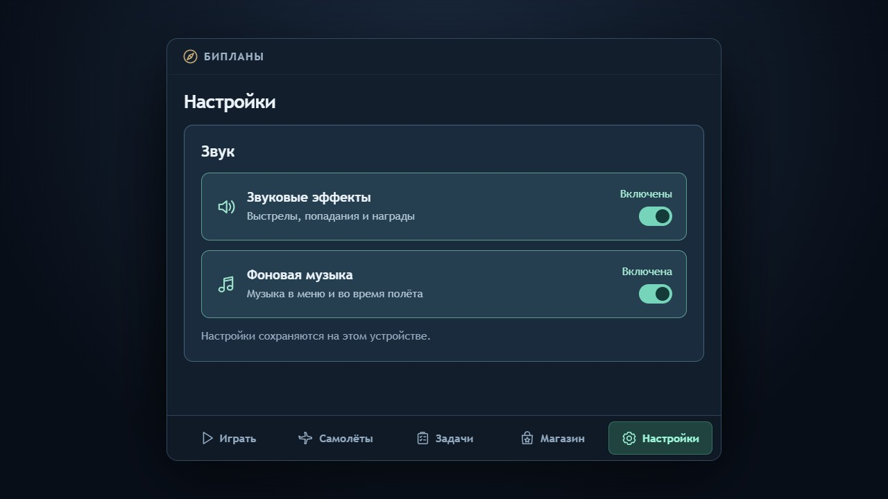
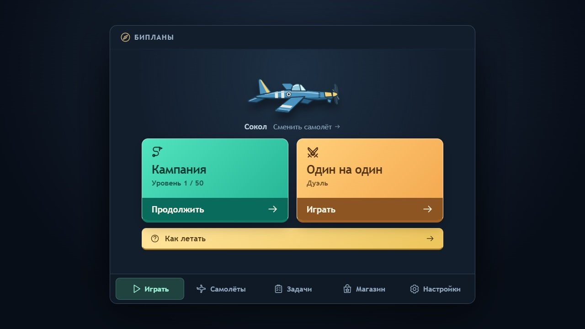

Яркая мультяшная авиация
и выразительные эффекты
Обязательное требование пользователя — красивая, броская мультяшная графика и достойно выполненные модели. Каждое игровое действие получает подходящий визуальный эффект: дым двигателя, выстрел, попадание, взрыв, ускорение и другие события. Бой сохраняет единое поле 16:9 с максимальным размером 800×450 px; развитие и покупки живут в компактном тёмном ангаре.
Рисунки ниже показывают расположение элементов и игровые состояния. Их упрощённые силуэты не задают итоговое качество графики: реальные самолёты, окружение и эффекты должны соответствовать мультяшному, красивому и броскому стилю. В сборке v0.6 модели заменены на стилизованные старые истребители; единый набор SVG-иконок сохранён; схемы ниже показывают структуру и не заменяют актуальные игровые кадры.
Новые самолёты v0.6
Основу рисунка составляют цельный фюзеляж, узнаваемое крыло, хвост, закрытая кабина и правильно расположенный двигатель. Крупный тёмный контур, два основных тона и цветовой акцент сохраняют форму при уменьшении. Не использовать открытого пилота, стойки и расчалки биплана, выпущенные колёса или россыпь мелких заклёпок в полётной модели.
Четыре художественных референса: поршневой P-51D Mustang, ранний реактивный МиГ-15, тяжёлый двухмоторный F-4 Phantom и самолёт с треугольным крылом МиГ-21. Названия «Сокол», «Стриж», «Бастион» и «Скат» остаются игровыми; рисунки оригинальные и стилизованные.

Перехватчик использует серебристо-красную версию раннего реактивного силуэта, тяжёлый враг — двухмоторный силуэт, босс — красный самолёт с треугольным крылом. Привязки эффектов задаются в координатах модели: у поршневой машины винт в носу и выхлоп двигателя, у реактивных — сопла в хвосте, у тяжёлой машины два сопла. Поворот и отражение сохраняют эти привязки. При повреждениях дым темнеет; форсаж удлиняет реактивный выхлоп.
Семь SVG имеют общий viewBox 400×200 и загружаются в полном размере. В обычной дуэли используется масштаб 0,45, у босса 0,55; в кампании перехватчик 0,36, тяжёлая машина 0,47. Игровое поле 1200×675 и правила столкновений сохранены. Кеш изображений обновляется версией в URL.
Новые модели в ангаре · Дуэль · Кампания на 844×390. Эти требования заменяют прежние описания бипланов и сложных мелких деталей. Старые игровые кадры ниже относятся к прежнему арту.


Настройки, справка и читаемость v0.5
Мобильная игра работает только в альбомном режиме, включая меню. При вертикальном положении полноэкранный экран поворота блокирует нижележащий интерфейс. Кампания и бой с ботом ставятся на паузу, после поворота продолжаются; ручная пауза сохраняется. Поиск соперника отменяется. Уже начатая онлайн-дуэль продолжается с явным предупреждением. Музыка и эффекты приостановлены, настройки громкости сохраняются.
В Консоли Яндекс Игр при создании проекта выбрать landscape: официальные требования к отображению. Проект ещё не создан; локальная блокировка уже реализована без зависимости от браузерного автоповорота.
Пять вкладок: «Играть», «Самолёты», «Задачи», «Магазин», «Настройки». На landscape они помещаются в один ряд, настройки звука — в две колонки при малой высоте. Два ряда навигации остаются резервом для узкого окна компьютера. Звуковые эффекты и музыка переключаются независимо; видны подпись состояния и положение переключателя. Выбор сохраняется на устройстве. Переключателей звука в шапке и боевом HUD нет.
Справка открывается с главного экрана. Кнопка «Назад» возвращает к режимам и остаётся сверху при прокрутке. Карточка задачи содержит крупное название, цель, счётчик и шкалу прогресса, отдельный блок награды и действия. Доступная награда выделяется бирюзовым; полученная имеет явную отметку. Архив оформлен так же, бонус входа выделен золотом.
Минимум 16 px распространяется на меню, условия покупки, прогресс, справку, поиск, паузу, результат, уведомления и боевой HUD. Текст Phaser увеличивается обратно пропорционально масштабу canvas: награды от 16 экранных px, заголовки переходов от 24 px. Изменение окна обновляет уже показанные подписи. Для читаемости на телефоне перестраиваются сетки, а не уменьшается шрифт.

Блокировка вертикального телефона · Карточки задач · Задачи на телефоне · Настройки на телефоне · Справка с возвратом


Эти уточнения заменяют прежние правила размещения звука, справки и размеров текста. Остальные требования к графике, полю 16:9 и плавности сохраняются.
Главный экран и ангар v0.4
Кнопки запуска стоят в один ряд на компьютере и телефоне. Прохождение выделено бирюзовым, дуэль — янтарным. Нижняя полоса каждой кнопки явно подписана «Играть» или «Продолжить» и содержит SVG-стрелку. Выбранный самолёт занимает второстепенную компактную область над кнопками; нажатие открывает ангар. Ранг и валюты отсутствуют на стартовом экране и отображаются на страницах развития и покупок.
Постоянная нижняя навигация: «Играть», «Самолёты», «Задачи», «Магазин», «Настройки». Справка расположена широкой кнопкой под режимами; звуковые переключатели — во вкладке «Настройки». Версия сборки, ссылка на документацию и служебные сообщения не занимают главный экран; сообщение о соединении появляется только при проблеме.
Ангар: выбор модели → характеристики → улучшения за серебро → оснащение за золото. Обычные и платные самолёты покупаются здесь. При просмотре ещё не купленной модели выбранный самолёт не изменяется. На карточке видны цена, ранг и нехватка ресурсов. Для модулей явно указано, что один активный модуль применяется ко всем самолётам. Золото подтверждается отдельным окном перед списанием.
Структурный референс: официальный гайд World of Warplanes размещает характеристики, улучшения и оборудование в ангаре. Сам интерфейс v0.4 реализован для нашей компактной 2D-игры по уточнениям пользователя.
Эти правила заменяют прежнюю структуру главного экрана и магазина. Требования v0.3 к тёмной теме, SVG, музыке, полю 16:9 и плавности сохраняются.
Обязательные уточнения v0.3
Интерфейс: фон #080E18, панели #131D2B и #1A2738, светлый текст #ECF3FA, бирюзовые и золотые акценты. Максимальная ширина ангара — 800 px. Бой — 800×450 px с пропорциональным уменьшением по доступной ширине и высоте. Логическое поле 1200×675 сохраняется целиком, включая на телефоне. Бой на телефоне проходит в альбомной ориентации; кнопки управления накладываются на то же поле.
Исторический вариант v0.3 использовал бипланы с пилотом, стойками и мелкими деталями. В v0.6 он заменён цельными истребителями с закрытой кабиной и более простым рисунком; актуальное направление описано выше. Четыре модели и враг различаются формой и окраской. Они выделяются на спокойном фоне; принятый фон текущей сборки сохранён. Палитра неба ниже относится к окружению, а тёмная палитра — к интерфейсу.
Все движущиеся объекты отрисовываются по единому времени: самолёты, враги, препятствия, снаряды и прокрутка карты. Задержка интерполяции 100 мс и ограниченный прогноз до 80 мс сглаживают снимки сервера 15 Гц. Пауза и окончание боя показывают точное состояние. Обычная смена уровня не сбрасывает позицию и курс; арена босса остаётся отдельным переходом.
Оригинальная музыкальная петля играет в меню и тише в бою. Музыка и звуки переключаются независимо через SVG-кнопки; настройки сохраняются. Звук начинается после действия игрока и останавливается на паузе, при сворачивании и рекламе. В v0.3 используется одна общая петля; отдельный трек боя остаётся дальнейшим улучшением.
Актуальные кадры реализации: тёмный ангар, мобильное меню, бой на компьютере, бой на телефоне. Проверка реальной производительности телефонов остаётся отдельным этапом.


Мультяшно, красиво, броско и законченно
Зафиксировано пользователем: графика и модели самолётов должны быть мультяшными, красивыми и броскими; каждое действие сопровождается подходящим эффектом. Дым двигателя, попадания и взрывы обязательны. Общий уровень исполнения должен выглядеть достойно как в бою, так и в ангаре.
Направление исполнения: выразительные формы, сочные цвета, аккуратный контур, свет и тень на корпусе, читаемые материалы и плавная анимация. Истребитель имеет цельный корпус, крылья, закрытую кабину и хвост; винт есть только у поршневой модели; модель выглядит цельной, а не набором случайных геометрических деталей. Платные модели и боссы получают собственный характер и узнаваемый силуэт.
Броскость строится на форме, цвете и качественном движении. Обязательное тёмное оформление интерфейса описано в уточнениях v0.3; светлое небо текущего боя сохранено. Небо и дальние планы поддерживают действие; передний рельеф, самолёты и эффекты заметны сильнее. Мультяшный взрыв имеет объём, вспышку, огонь, частицы и дым; попадание заметно отличается от выстрела. Эффекты используют общую художественную систему, а не набор несовместимых шаблонов.
Палитра выше — предложение, а требования к мультяшности, броскости и качеству уже заданы пользователем. Спокойное оформление самих документов не является палитрой будущего боя. Финальная комбинация проверяется на реальных игровых масштабах и разных фонах.
Фон имеет два-три живых плана с облаками, дальним ландшафтом и выразительным рельефом. Приоритет читаемости: опасность и снаряды → самолёты → препятствия → фон. Дым и огонь красивы, но сохраняют видимость модели, направления полёта и окна уклонения. Важный объект различается также по форме и подписи.
Для интерфейса — аккуратная типографика с кириллицей и латиницей. Любой текст игры не менее 16 CSS px, включая вспомогательные подписи и боевой HUD; числа ресурсов не скачут по ширине. Игровые иконки и панели продолжают мультяшный стиль техники. Статические серые заглушки и упрощённые схемы не считаются финальным набором для публикации.
Модель узнаётся по форме
- Сокол: поршневой моноплан, прямое крыло, винт в носу, радиатор под корпусом; синий с кремовыми полосами.
- Стриж: компактный реактивный, стреловидное крыло, круглый носовой воздухозаборник; бирюзовый с жёлтым акцентом.
- Бастион: массивный двухмоторный корпус, широкое крыло, двухместная кабина и тёмный вытянутый нос; оливковый с песочным акцентом.
- Скат: узкий фюзеляж, длинный нос и треугольное крыло; лавандовый с золотым акцентом. Платная модель отличается формой и механикой.
Текущие модели можно сравнить крупно и в игровом размере. На поле шириной 800 CSS px обычная машина занимает рамку 120×60 px, сам силуэт немного меньше; при уменьшении окна масштаб меняется пропорционально. Мелкие детали не используются для распознавания. Своя и вражеская техника различаются окраской и шкалой HP; дым не закрывает направление полёта.
Исходный самолёт направлен вправо. Дуэль вращает модель вместе с курсом и сохраняет кабину сверху при полёте влево; встречные самолёты кампании отражаются горизонтально. HUD остаётся неподвижным. Выхлоп и винт следуют тем же преобразованиям. Упрощённые hitbox и параметры симуляции в v0.6 не менялись.
Дуэль: бой занимает всё поле
Схема 16:9. Цифры иллюстрируют размещение HUD. В готовом интерфейсе стрелки управления — согласованные SVG-иконки.
Сверху — собственное здоровье, счёт, время и здоровье противника. Индикатор перегрева расположен около огня; ресурс ускорения — около разгона. Системная информация о связи небольшая и появляется при ухудшении, а не конкурирует с прицеливанием постоянно.
Кнопки не перекрывают центральный коридор дуэли. На ПК touch-кнопки скрываются, а подсказки клавиш видны только в первых боях. Подписи и шкалы сохраняют горизонтальную ориентацию. Урон даёт короткую вспышку и звук; лёгкая тряска отключается в настройках.
Экран результата: крупный исход → счёт и обычная награда → прогресс задач → «Ещё дуэль» и «В ангар». Отдельная необязательная кнопка «Удвоить серебро за видео» объясняет точный бонус. Награда не ждёт просмотра.
PvE: 50 уровней без остановки между ними
В первой зоне самолёт продвигается вправо через 50 уровней. Граница обычного уровня показывает короткую подпись нового номера и меняет состав/силу будущих угроз; полёт не прекращается, магазин и экран результата не открываются.
Схема обычного участка уровня; переход к 19 происходит прямо в полёте без кнопки «Далее». Touch-управление занимает те же безопасные области, что в дуэли.
В HUD — «Зона 1 · уровень 18/50», прогресс текущего участка и ближайший босс. Опасность у края обозначается стрелкой и пиктограммой. За подтверждённое уничтожение кратко появляются серебро и опыт; золото в этих уведомлениях отсутствует. Накопленную награду можно посмотреть на паузе, не превращая переходы в отдельные экраны.
На боссе меняется состояние того же экрана
Схема встречи на 25. Счёт обычного PvP заменён HP босса; числовые значения иллюстрируют предложенный баланс.
На уровнях 10, 25 и 50 камера фиксируется, обычные спавны прекращаются и входит самолёт-босс. HUD показывает его имя, явную метку ИИ и здоровье. Нет поиска соперника, кнопки галочки ботов или обратного отсчёта очереди. Это тот же дуэльный полёт внутри прохождения.
После победы над первым или вторым боссом награда показывается компактно, прокрутка возобновляется и приходит подпись «Уровень 11» или «Уровень 26». Экран победы всей зоны появляется только после босса 50. Между уровнями и на этих двух переходах interstitial не показывается.
Предложение при поражении: «Повторить уровень бесплатно», на боссе — «Повторить босса бесплатно»; рядом необязательное видео-продолжение с точным описанием. Кнопка «В ангар» на паузе сохраняет текущую попытку. Возвращение через «Продолжить PvE · уровень 18/50» восстанавливает полёт; очередную ступень не выбирают из меню.
Главный экран и самолёты
Главный экран отвечает за запуск: самолёт и два режима. Подробности о машине, её покупка и прокачка доступны во вкладке «Самолёты». Статуса ремонта нет: платный ремонт не реализован, поэтому «Исправен» не показывается.

В ангаре четыре модели доступны для просмотра: один ряд на компьютере, два ряда на узком экране. Для купленного самолёта рядом находятся характеристики и ветки улучшений, ниже — оснащение за золото. Условия ранга и цена показываются заранее. Покупка модели не переносится в магазин золота.
На телефоне обе кнопки запуска видны без прокрутки. Подробная страница самолёта прокручивается внутри меню; нижние вкладки остаются доступными.
Главный экран на телефоне · Ангар v0.6 · Улучшения и оснащение


Очередь: разрешение ботов остаётся видимым
Поиск соперника
Сокол · выбранная сборка
Если игрок не найдётся за 15 секунд, начнётся бой с ботом.
Отменить поискПолзунок и галочка показывают предложенную реакцию интерфейса. Настоящий поиск, таймер и сервер здесь отсутствуют; «Отменить» — часть схемы.
На 15 секунде при включённой галочке: «Игрок не найден. Начинаем бой с ботом». При выключенной: «Игрок пока не найден. Поиск продолжается» и пояснение, что ботов можно разрешить. Если включить галочку после 15 секунд, дополнительное ожидание не требуется.
Когда сервер закрепил матч, очередь меняется на «Соперник найден» и показывает тип соперника. До подтверждения изменения галочки интерфейс не заявляет, что разрешение уже применено. Не показывать вымышленные числа онлайн-игроков, аватары якобы найденных людей или ленту фиктивных побед.
Магазин, задачи и бонусы
Магазин
Два раздела: пакеты золота и переплавка в серебро/опыт. Для пакетов золота показывается текущая цена платформы. Самолёты, уникальные модули и их покупка доступны во вкладке «Самолёты». Покупка не скрывает значимые ограничения товара.
Карточка золота показывает количество и цену. Обмен показывает затраты и результат в серебре или опыте; подтверждение требуется перед списанием. При недостатке золота действия заблокированы. Реальные покупки в текущей локальной сборке ещё недоступны.
Задачи и бонусы
Вкладки «Сегодня» и «Неделя», обратный отсчёт периода и три строки задач. У каждой видны условие, прогресс и награда серебром/опытом. Сначала доступные к получению задачи; выполненная строка остаётся отмеченной.
Бонус входа показывает семь шагов цикла, доступную награду и дату следующего получения. Пропуск дня не перекрашивает накопленный прогресс в потерю. Бесплатное золото в макетах и наградах не отображается.
Обмен и подтверждение
В отдельном окне: «Потратить 50 золота → получить 1250 серебра», текущий баланс и баланс после операции, кнопки «Обменять» и «Отмена». Для опыта — новый накопительный опыт и ранг после покупки. Нажатие блокируется на время обработки; ошибка не сообщает об успехе. После связи сначала проверяется итог операции.
Переходы
Нижняя навигация доступна на всех страницах меню. Бой и очередь возвращают на главный экран. Esc ставит PvE и дуэль с ботом на паузу; живая онлайн-дуэль продолжается. Просмотр ещё не купленной модели и переход в магазин не меняют самолёт для вылета. Обновление кошелька или награды сохраняет прокрутку текущей страницы.
Телефон, низкое окно и доступность
- Бой рассчитан на горизонтальный экран. В портрете — полноэкранная блокировка с просьбой повернуть устройство; кампания и бот останавливаются, живой матч продолжается с предупреждением. Поворот сам не снимает другую причину паузы.
- На телефоне меню также требует landscape. Вертикальная раскладка остаётся резервом для узкого окна компьютера. Платёжное окно не закрывается из-за поворота; после него восстанавливается последний подэкран.
- Начальные минимальные цели управления: поворот и огонь 64×64 CSS px, ускорение 52×52, обычные кнопки минимум 44 px по высоте. Между touch-зонами оставлять зазор.
- Учитывать вырезы и безопасные отступы. На окне 667×375 и 844×390 обязательно проверить крайние кнопки, HUD, диалоги и счёт. В длинном меню допустим скролл; на боевом поле его нет.
- Соотношение сторон не даёт дополнительного обзора в PvP. Одна логическая арена и одинаковый сектор боя; широкое окно добавляет поля или масштаб, а не видимость соперника за пределами общих границ.
- Свои/чужие, перегрев и предупреждение различаются формой, подписью и звуком; цвет дополняет их. Доступны раздельные громкости, отключение тряски и уменьшение вспышек.
- Обучение использует короткую демонстрацию, затем действие игрока. Кнопка «Как играть» возвращает подсказки. Пропуск обучения не закрывает основной доступ.
- Русский и английский интерфейсы проверяются на самые длинные подписи. Текст важных условий покупки не рисуется внутри маленького растра.
Каждое действие имеет подходящий эффект
Визуальный отклик — часть обязательного качества игры. Ниже — целевое покрытие эффектами для выпуска, а не перечень всех уже готовых анимаций. Для каждого действия задан эффект, согласованный с его смыслом: двигатель работает, пуля вылетает, металл получает удар, самолёт уничтожается, награда записывается. Звук усиливает визуал, а выбор «без звука» сохраняет понятность события.
| Действие / состояние | Визуальный эффект | Звук и ощущение |
|---|---|---|
| Работа двигателя и полёт | У поршневой модели винт и выхлоп двигателя; у реактивной — выхлоп сопла. Плавное движение и лёгкий дым | Мотор с изменением тона при нагрузке |
| Поворот и петля | Плавная дуга корпуса, короткие воздушные следы у крыльев при резком манёвре | Лёгкий воздушный свист по интенсивности манёвра |
| Ускорение | Более сильный выхлоп, вытянутый воздушный след, анимация двигателя и реакция шкалы | Нарастающий мотор и чёткий отклик начала ускорения |
| Пулемётная очередь | Вспышка у ствола, короткий след снаряда, небольшая отдача модели/оружия | Ритмичная очередь, соответствующая моментам выстрела |
| Перегрев и охлаждение | Свечение/жар около оружия и выразительная шкала; постепенное затухание при охлаждении | Отдельный сигнал предела перегрева |
| Попадание в самолёт | Короткая вспышка удара, искры/мелкие частицы корпуса, реакция модели и шкалы HP | Удар по металлу; подтверждение урона соответствует серверному результату |
| Повреждённый двигатель | Дым становится плотнее и темнее с ухудшением HP; на критическом здоровье добавляется локальный огонь | Изменённый звук двигателя, понятный сигнал критического состояния |
| Столкновение и уничтожение | Достойный мультяшный взрыв: вспышка → огненный объём → короткий разлёт обломков → дым | Выразительный взрыв; короткая настраиваемая тряска |
| Наведение и залп ПВО | Читаемая зона/траектория предупреждения, вспышка ствола, отдача, след снаряда | Предупреждение и отличимый тяжёлый выстрел |
| Появление врага | Влёт по траектории, читаемый след и короткий краевой маркер | Лёгкий сигнал угрозы при необходимости |
| Возрождение / продолжение | Короткий эффект появления, понятный защитный контур с затуханием | Звук возврата в полёт |
| Переход уровня | Плавная подпись нового номера, краткий световой акцент HUD; полёт продолжается | Короткая музыкальная отметка прогресса |
| Вход и смена фазы босса | Выразительный влёт, появление имени и HP; заметная анимация смены тактики | Предупреждение, музыкальный акцент и новый рисунок мотора/атаки |
| Уничтожение босса | Более крупный согласованный взрыв, дым и получение награды; затем переход к полёту/финалу | Сильный финальный акцент без потери следующего предупреждения |
| Серебро и опыт за врага | Короткое появление иконок и чисел с уходом к компактному счётчику | Негромкий звук начисления, с объединением частых событий |
| Покупка, улучшение и открытие самолёта | Выделение полученной модели/модуля, анимация изменения параметра и завершения операции | Отличимый отклик приобретения только после подтверждённой записи |
| Задача, бонус и ранг | Заполнение шкалы, отметка выполнения, аккуратное получение награды/нового ранга | Короткая позитивная мелодия, отличимая от боевого события |
| Кнопка и переключатель | Нажатие, выбранное состояние и плавный возврат; подтверждение действия видно сразу | Единый лёгкий UI-отклик, блокировка повторного действия при обработке |
В ангаре используется спокойное движение и подсветка формы. Винт относится только к поршневой модели. Открытие платной модели должно показывать её достойно. В бою временные слои вспышки, огня, обломков и дыма визуально согласованы и работают в реальном масштабе, а не только в увеличенном превью.
Интенсивность эффектов имеет градации: двигатель, обычное попадание, уничтожение, босс и победа зоны не получают одинаковую вспышку. При серии убийств награды объединяются в читаемый отклик. Эффект не закрывает цель и опасный пролёт; качество сохраняется через композицию и анимацию, а не через бесконтрольное количество частиц.
Эффекты создаются отдельными спрайтовыми анимациями и ограниченными системами частиц, с общими цветами и таймингом. На слабом устройстве упрощаются второстепенные частицы, но у каждого обязательного события сохраняется видимый законченный отклик. Предусмотрены отключение тряски, уменьшение вспышек и отдельные громкости.
В меню — мультяшная авиационная музыкальная петля; в бою она поддерживает ритм и не закрывает сигналы ПВО/перегрева. Звук запускается после действия пользователя, останавливается при фоне, паузе и рекламе. Выстрел и попадание в v0.6 отображаются по серверному событию; локальное предсказание выстрела пока отсутствует; сильное подтверждение урона появляется по подтверждённому результату.
Минимальный набор ассетов
- Четыре законченные мультяшные модели самолётов: цельный корпус с крыльями и кабиной, свет/тень и детали, выразительный силуэт; состояния повреждения, дым, отдельный винт или цикл его вращения. Направления получаются вращением; отдельные 16 видов для 2D не нужны.
- Два визуальных набора арен: долина и каньон; одна зона PvE из 50 записей уровней с совместимыми сегментами рельефа и непрерывным фоном.
- ПВО, обычный/усиленный перехватчик, тяжёлая цель, три различимых босса на 10/25/50 и необходимые варианты снарядов. Вражескую технику создавать отдельно только там, где её функция отличается.
- Полный набор эффектов из матрицы: двигатель/выхлоп, манёвр, выстрел/след, перегрев, попадание/искры, повреждение, многослойный взрыв/обломки/дым, ускорение, появление/защита, ПВО, уровень, босс, награда, покупка и UI-отклик.
- Единый набор SVG-иконок ресурсов, поворота, огня, ускорения, задач, награды, настроек и связи; иконки золота и серебра отличаются формой.
- Карточки трёх пакетов золота, двух модулей и превью платного самолёта; тексты остаются вне изображений.
- Звуки событий и две короткие петли меню/боя. Промоматериалы готовятся после получения финальных игровых кадров.
Рекомендация производства: исходники техники и иконок в векторе или послойной графике; игровые модели экспортировать в компактные атласы. Размер и формат определить замерами. Подробный арт ангара может иметь отдельное более крупное превью, но бой не загружает весь маркетинговый набор.
Что должно пройти визуальную приёмку
- Графика мультяшная, красивая и броская; модели целостны, имеют аккуратные детали, свет/тень и плавное движение. Качество одинаково убедительно в ангаре и в игровом масштабе.
- Все события матрицы имеют готовый подходящий эффект. Дым двигателя, попадания и взрывы выполнены как согласованный художественный набор; заглушки не проходят приёмку.
- За одну секунду понятны направление полёта, свой самолёт и опасность. Четыре модели различимы в чёрном силуэте.
- На телефоне пули, перехватчик и окно между препятствиями не скрыты пальцами или HUD. Опасный объект не сливается с фоном.
- На четырёх игровых масштабах не пропадают винт, крылья и читаемая ориентация. Дым не закрывает точку прицеливания.
- Нет обрезанных цен, кнопок подтверждения и условий покупки при английском тексте, маленькой высоте и повороте устройства.
- Галочка ботов видна во всё время ожидания, метка ИИ есть до боя и в результате. Макет не обещает готовый поиск людей.
- В бою отсутствуют рекламные панели, предложение покупки и задачи, закрывающие манёвр. Обычная награда видна до необязательного видео.
- Паузы, плохая сеть, незавершённая покупка и ожидание сохранения имеют ясные состояния интерфейса без сброса прогресса.
Переход обычного уровня не выглядит как окончание вылета. Остановка карты на боссе и возврат к прокрутке после 10/25 читаются без подсказки; на 50 понятен конец зоны.
Для v0.6 проверены загрузка семи SVG, ангар, дуэль, кампания и мобильный масштаб; текущие кадры находятся в первом разделе. Полная художественная приёмка всех эффектов и замеры на физических телефонах ещё предстоят.